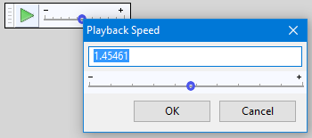

Transcription Toolbar
Click on the toolbar image below to see this toolbar displayed in context of the default upper tooldock layout.
{kind=link}
Transcription Toolbar has its own Play-at-Speed button which plays (or restarts playback) at the speed set by the Play-at-Speed slider to the right. Playback can be paused and resumed at the adjusted speed using the Pause button in Transport Toolbar or the shortcut P. Irrespective of the setting on the slider, using Space or the green Play button on Transport Toolbar will only play at normal speed. You can however set a keyboard shortcut for "Play-at-Speed" with which you can start or restart playback at adjusted speed.
Drag the slider to set a lowest speed of one-hundredth of normal (0.01x) to three times as fast (3.00x). Using the keyboard, right-click on the slider then use the keyboard arrow keys to change speed by 0.05x increments. Alternatively you can set keyboard shortcuts for "Decrease playback speed" and "Increase playback speed". Each press of those shortcuts decreases or increases speed respectively by 0.03x increments.
To set a precise playback speed, double-click over the slider (or create a keyboard shortcut for "Adjust playback speed"), enter the desired speed in the box and click OK.
- 
- To Loop Play at speed (play the track or selection over and over at adjusted speed until you stop), hold down Shift while clicking the Play-at-Speed button. This causes the button image to change to Loop Play . The standard Shift + Space shortcut for Loop Play will only play at normal speed whatever the setting on the Play-at-Speed slider, but you can set a keyboard shortcut for "Loop Play at speed" in Keyboard Preferences.
- To Play Cut Preview at speed (play audio either side of a selection at adjusted speed to preview what deleting the selection will sound like), hold down Ctrl while clicking the Play-at-Speed button (this works on Mac too, but using ⌘ while clicking does not). This causes the button image to change to Play Cut Preview (like the green Play button but with a vertical cut through it). The standard C shortcut for Play Cut Preview will only play at normal speed whatever the setting on the Play-at-Speed slider, but you can set a keyboard shortcut for "Play Cut Preview at speed" in Keyboard Preferences.
It is not currently possible to change speed during playback. To change speed when audio is already playing, change the speed first with the slider, then click the green Play-at-Speed button to play at the new speed. Playback resumes from the original cursor position. This can also be achieved by setting keyboard shortcuts to control Play-at-Speed as described above.